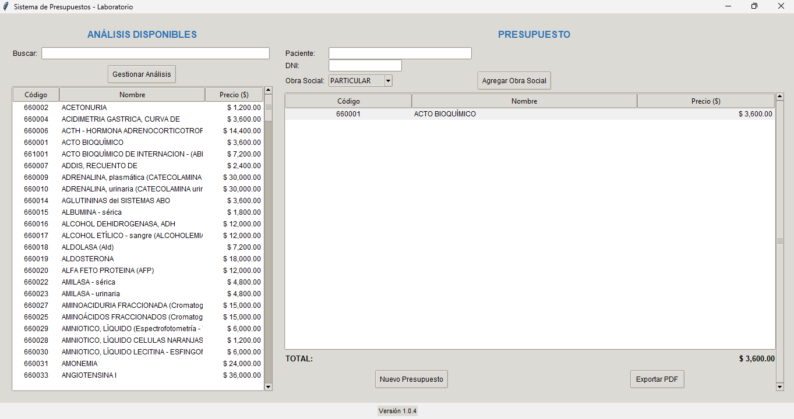
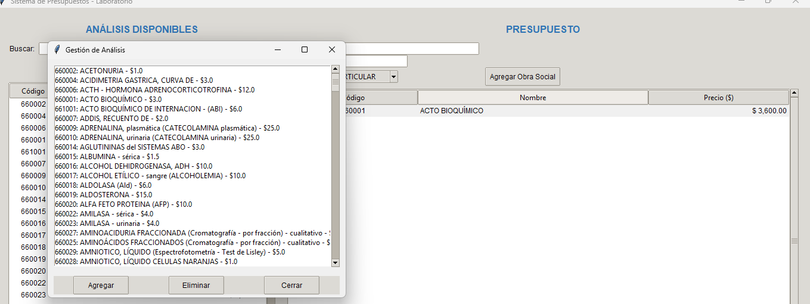
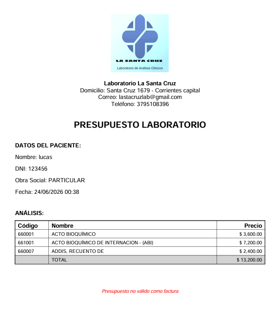
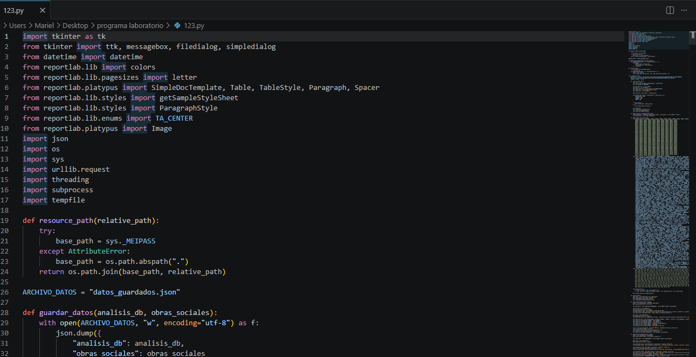

Sistema desarrollado en Python para la administración de análisis clínicos, obras sociales y generación de presupuestos. Diseñado para optimizar procesos operativos y administrativos en entornos de laboratorio.



